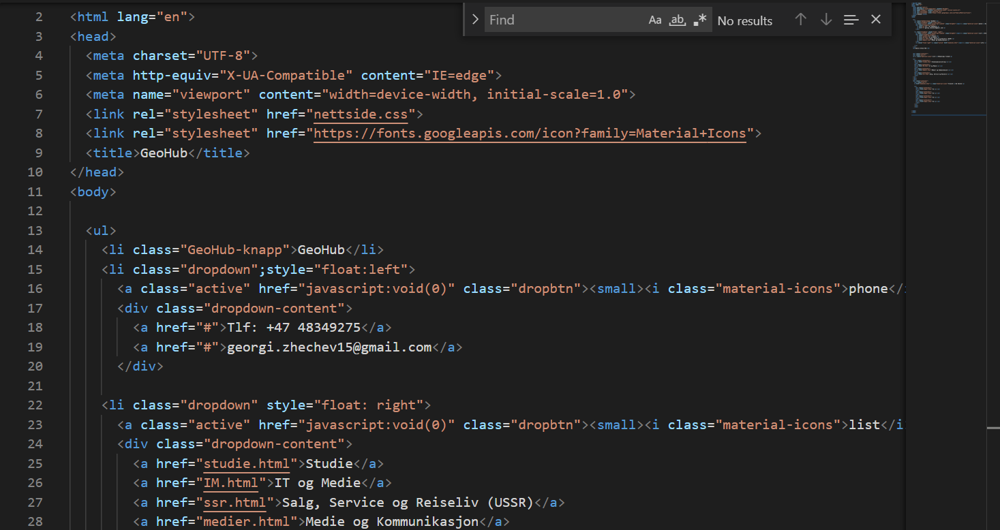

IT og Medie
(Yrkesfaglig)

Litt om linjen
linjen passer for deg som er interresert i teknologi, design og programering.
Linjen handler om hvordan teknologi har utviklet samfunnet og hvordan teknologi fortsetter å utvikle samfunnet.
I denne linjen så kommer dere til å drive med mange forskjellige prosjekter. Dere kommer til å utvikle nettsider, redigere videoer osv.
Linijen bidrar til at du får en mer moden, teknisk og kreativ tankegang.
Hvorfor velge linjen?
Hvis du velger denne linjen så kommer du til å lære mange tekniske og interreserende ting. Blant annet hvordan utvikle en nettside, forskjellige programmeringspråk og andre ting som hvordan internett fungerer.
Dette er en gøy linje med et godt læringsmiljø og gode lærere.
Du slipper å ha mange prøver om realfag og det er veldig chill.
Egenskaper
-Kreativ
-Interresert i IT, nettverk og programvare.
-Interresert i design
-Nøyaktig
Egentlig trenger du bare å være interresert i programering eller medie.